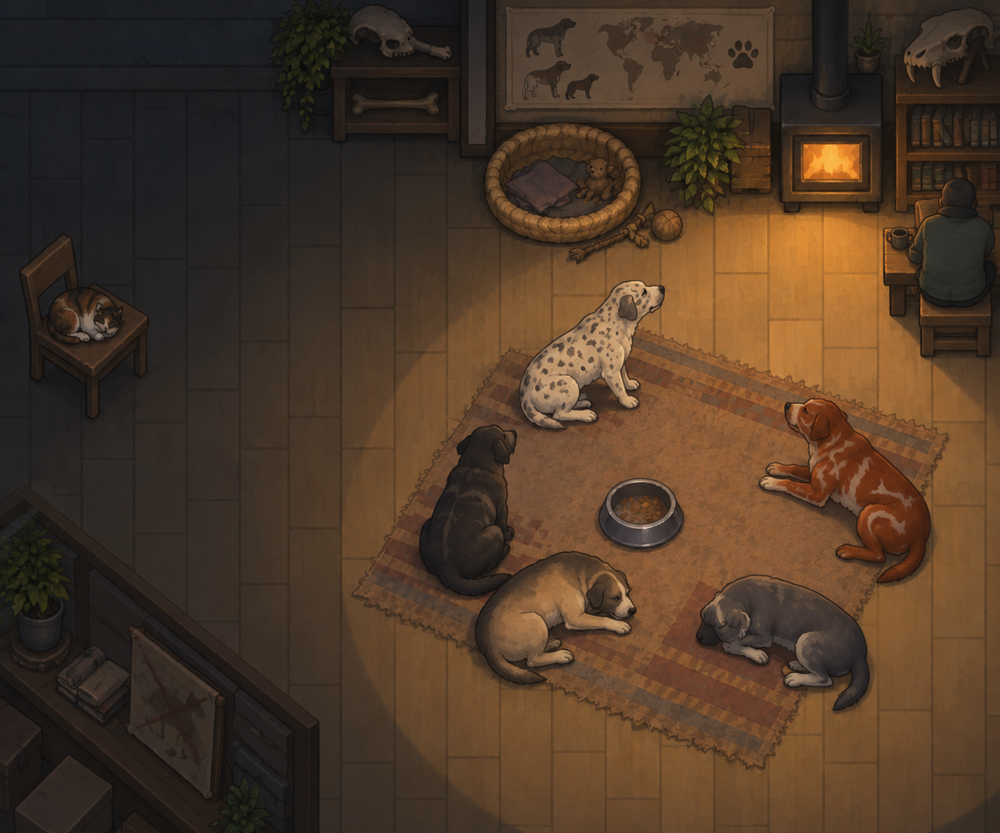

Colorful Coats -
Vanilla Animals
Expanded! Renew
Coat variations for the cats, dogs and wildlife of Vanilla Animals Expanded.

Coat variations for the cats, dogs and wildlife of Vanilla Animals Expanded.